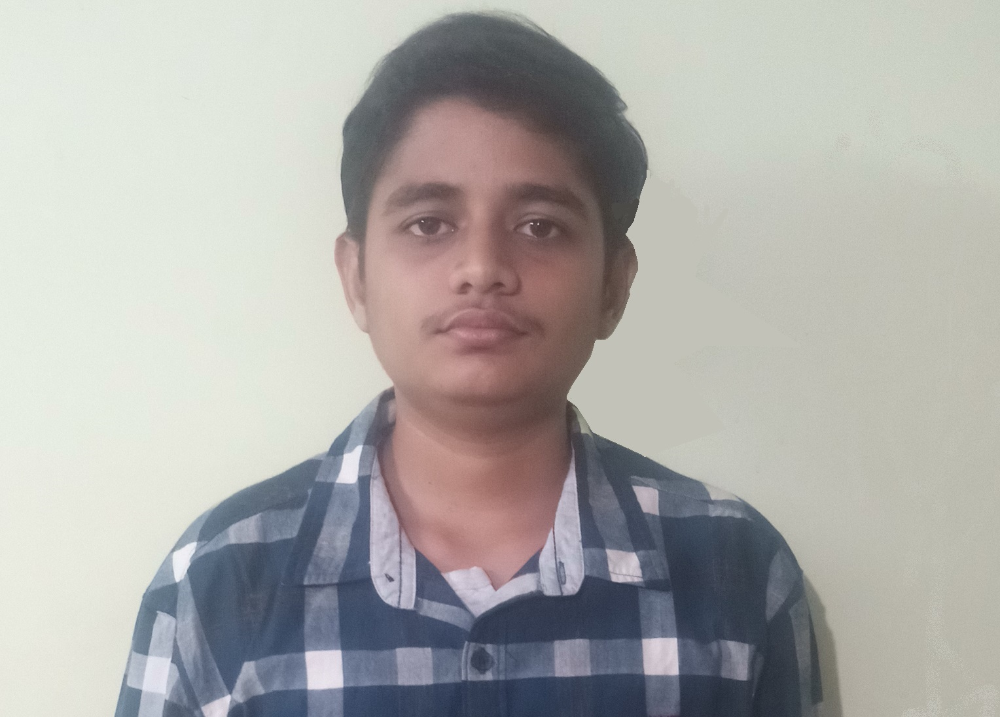

DSA
THIS is DURGAVAJJALA SAI ASHWIN Resume

Carrer Objective:
Seeking for Job in your company that challenges my skills, updates my current knowledge, and my efforts make a considerable difference ,and up-lift ment to the company
QUALIFICATIONS
INSTITUTION
UNIVERSITY/BOARD
YEAR of PASSING
BACHELOR OF TECHNOLOGY
GAYATRI VIDYA PARISHAD College of Engineering
J.N.T.U.K
2021
INTERMEDIATE
SRI CHAITANYA Junior College
B.I.E
2017
10 th class
SRI CHAITANYA TECHNO SCHOOL
S.S.C
2015
Technical skills:
Programming skills : C, Python(Intermediate),DATA SCIENCE, Computer Vision.
Automation softwares : UI PATH,BLUE PRISM.
Other softwares :M.S.Office, Adobe Photoshop 7.0 (Beginner).
OS worked on :Windows,Linux
Programming Softwares : MATLAB, CADENCE, XILINX, MULTISIM,EAGLE.
Embedded skills : Raspberry pi, Arduino.
Projects & Workshops :
*Project on “Detecting Flying objects using DEEP LEARNING and EDGE DEVICES”.
*Internship in " MEDIVALLEY incubation council" on “STEEL PLANT”.
Project on “Web development” of building my Resume.
Workshop Organized and Volunteered “Embedded systems using Raspberry Pi”.
Participated in workshop organized by “MSME” on IOT.
Participated in workshop named “ROBOKART” organized by IIT BOMBAY.
Courses & Achievements :
Certificates on Machine Learning , IOT and YOLOV3 from coursera.
Certificate from PCAP on Python
Certificate on “Build Your Portfolio Website with HTML and CSS” from coursera.
Core Member of Technical Club ,part of A.E.C.E. - E.C.E ,DepartmentGVP.
Extra-Curricular Activities :
Attending webinar and workshops on Emerging technologies.
Events Organized :Technical Quiz,Demystify.
Active Member of Rotaract Club.
Participated in “Free Cloths distribution” program organized by AIKYA of AkshayaPatra foundation.
Languages Known : Telugu,English,Hindi(Intermediate).
Sports and Games : Keyboard(Casio),Swimming, Badminton,Football.